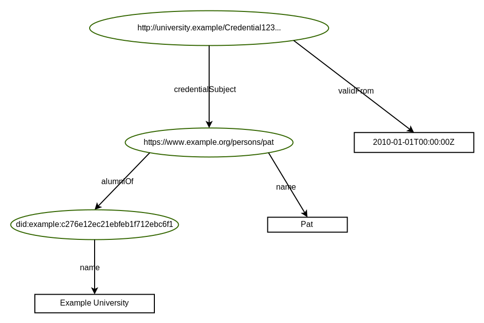

Credentials are a part of our daily lives; driver's licenses are used to assert that we are capable of operating a motor vehicle, university degrees can be used to assert our level of education, and government-issued passports enable us to travel between countries.
The family of W3C Recommendations for Verifiable Credentials, described in this overview document, provides a mechanism to express these sorts of credentials on the Web in a way that is cryptographically secure, privacy respecting, and machine-verifiable.
Introduction
This document provides a non-normative, high-level overview for W3C's Verifiable Credential specifications and serves as a roadmap for the documents that define, describe, and secure these credentials.
It is not the goal of this document to be very precise, nor does this overview cover all the details.
The intention is to provide users, implementers, or anyone interested in the subject, a general understanding of the concepts and how the various documents, published by the Verifiable Credentials Working Group, fit together.
High Level View of the Specifications
provides an overview of the main building blocks for Verifiable Credentials, including their (normative) dependencies.
For more details, see the subsequent sections in this document.
The [[[VC-DATA-MODEL-2.0]]] [[VC-DATA-MODEL-2.0]] specification, which defines the core concepts that all other specifications depend on, plays a central role.
The model is defined in abstract terms, and applications express their specific credentials using a serialization of the data model.
The current specifications mostly use a JSON serialization; the community may develop other serializations in the future.
When Verifiable Credentials are serialized in JSON, it is important to trust that the structure of a Credential may be interpreted in a consistent manner by all participants in the verifiable credential ecosystem.
The [[[VC-JSON-SCHEMA]]] [[VC-JSON-SCHEMA]] defines how [[JSON-SCHEMA]] can be used for that purpose.
Credentials can be secured using two different mechanisms: [=enveloping proofs=] or [=embedded proofs=].
In both cases, a proof cryptographically secures a Credential (for example, using digital signatures).
In the enveloping case, the proof wraps around the Credential, whereas embedded proofs are included in the serialization, alongside the Credential itself.
A family of enveloping proofs is defined in the [[[VC-JOSE-COSE]]] [[VC-JOSE-COSE]] document, relying on technologies defined by the IETF.
Other types of enveloping proofs may be specified by the community.
The general structure for embedded proofs is defined in a separate [[[VC-DATA-INTEGRITY]]] [[VC-DATA-INTEGRITY]] specification.
Furthermore, the Working Group also specifies some instances of this general structure in the form of the "cryptosuites": [[[VC-DI-EDDSA]]] [[VC-DI-EDDSA]], [[[VC-DI-ECDSA]]] [[VC-DI-ECDSA]], and [[[VC-DI-BBS]]] [[VC-DI-BBS]].
Other cryptosuites may be specified by the community.
The [[[VC-BITSTRING-STATUS-LIST]]] [[VC-BITSTRING-STATUS-LIST]] specification defines a privacy-preserving, space-efficient, and high-performance mechanism for publishing status information, such as suspension or revocation of Verifiable Credentials, through the use of bitstrings.
Finally, the [[[CONTROLLER-DOCUMENT]]] [[CONTROLLER-DOCUMENT]] specification defines some common terms (e.g., verification relationships and
methods) that are used not only by other Verifiable Credential specifications, but also other Recommendations such as [[[DID-CORE]]] [[DID-CORE]].
Verifiable Credentials Working Group Recommendations
Ecosystem Overview
The Verifiable Credential specifications rely on an ecosystem consisting of entities playing different "roles".
The main roles are:
Issuer
An entity that creates a Credential, consisting of a series of statements related to the subject of a
Verifiable Credential.
An example is a university that issues credentials for university degrees or certificates for alumni.
Holder
An entity that possesses one or more Credentials, and that can transmit presentations of those
Verifiable Credentials to third parties.
An example may be the person who "holds" his/her own educational degrees.
Another example may be a digital wallet that contains several Credentials on someone's behalf.
Verifier
An entity that performs verification on a Verifiable Credential to check the validity, consistency, etc., of a Credential.
An example may be an employer's digital system that checks the validity of a university degree before deciding on the
employment of a person.
For a more precise definition of these roles, as well as other roles, see the relevant section in the data model specification.
The roles and information flows forming the basis for the VC Data Model.
Verifiable Credentials Data Model
Basic Structure
Claims, Properties
A core concept is "claims": statements made about various entities, referred to as "subjects".
Subjects may be a holder, an issuer, or a verifier as listed above, but may also any be another person (e.g., the person holding a university degree), an animal, an abstract concept, etc.
Claims may also be on a Credential itself, such as issuance date, validity periods, etc.
(Such claims are also loosely referred to as "credential metadata".)
Claims are expressed using "properties" referring to "values".
Values may be literals, but may also be other entities referred to, usually, by a [[URL]].
It that case, the entity may become the subject of another claim; these claims, together, form a "graph" of claims that represents a Credential.
(See for an example of such a graph, represented graphically.
For more complex examples, refer to the [[[VC-DATA-MODEL-2.0]]] specification itself.)
The basic structure of a claim with (in this case) a literal value.
The [[[VC-DATA-MODEL-2.0]]] document specifies a number of standard properties. These include, for example, `credentialSubject`, `type`, `issuer`, or `validFrom`.
Developers may define their own properties to express specific types of Credentials, like a driving license, a university degree, or a marriage certificate.
Verifiable Credentials
A Credential is a set of one or more claims made by the same entity.
Credentials might also include an identifier and metadata to describe properties of the Credential, such as a reference to the issuer, the validity date, a representative image, the revocation mechanism, and so on.
A Verifiable Credential is a set of claims and metadata that also includes verification mechanisms that cryptographically prove who issued it, ensures that the data has not been tampered with, etc.
For a more detailed description of abstract Verifiable Credentials, with examples, see the relevant section in the data model specification.
Basic components of a Verifiable Credential.
Verifiable Presentations
Enhancing privacy is a key design feature of Verifiable Credentials.
Therefore, it is important, for entities using this technology, to be able to express only the portions of their persona that are appropriate for a given situation.
The expression of a subset of one's persona is called a Verifiable Presentation.
Examples of different personas include a person's professional persona, their online gaming persona, their family persona, or an incognito persona.
A Verifiable Presentation is created by a holder, can express data stemming from multiple Verifiable Credentials, and can contain additional metadata in forms of additional claims.
They are used to present claims to a verifier.
It is also possible to present Verifiable Credential directly.
A Verifiable Presentation is usually short-lived, it is not meant to be stored for a longer period.
For a more detailed description of abstract Verifiable Presentations, with examples, see the relevant section in the data model specification.
Basic components of a verifiable presentation.
Serialization in JSON
In the [[VC-DATA-MODEL-2.0]] specification, as in the other documents, Verifiable Credentials and Presentations are mostly expressed in JSON [[RFC7519]], more specifically [[JSON-LD11]].
In this serialization, properties of claims are represented as JSON names, and values as JSON literals or objects.
Subjects of claims are either explicitly identified by an `id` property, or implicitly by appearing as an object of another claim.
Standard properties defined by the [[VC-DATA-MODEL-2.0]] form a distinct set of JSON names, referred to as a (standard) vocabulary.
An important characteristics of Verifiable Credentials in JSON-LD is that it favors a decentralized and permissionless approach to extend to a new application area through application-specific set of properties, i.e., vocabularies, distributed on the Web.
Anyone can "publish" such a vocabulary, following some rules described in the extensibility section of the specification.
The following JSON-LD code is an example for a simple Credential. It states that the person named "Pat", identified by https://www.exampl.org/persons/pat, is an alumni of the Example University (identified by did:example:c276e12ec21ebfeb1f712ebc6f1).
The Credential is valid from the 1st of January 2010, and is issued by an entity identified by did:example:2g55q912ec3476eba2l9812ecbfe.
Most of the properties in the Credential are from the standard Verifiable Credentials vocabulary, but some terms (like `alumniOf`, `AlumniCredential`) are added by the application-specific vocabulary referred to by https://www.w3.org/ns/credentials/examples/v2.
shows the same Credential, but represented as a graph of claims, as described in .

Credential in represented as a collection of claims.
The Credential in is used throughout this document to show how to apply additional features defined by the various specifications.
The Credential in , issued by Example University, is stored by a holder (who may be a person, a digital wallet, or any other entity). On request, the holder may "present" a Credential to a verifier, encapsulated in a Verifiable Presentation. This is how the result may look like in the JSON-LD serialization:
Note that the holder could have presented several Credentials within the same presentation or create a new Credential by either combining it with others, or removing some claims as irrelevant for the specific context.
Checking Structure with JSON Schemas
A significant part of the integrity of a Verifiable Credential comes from the ability to structure its contents so that all three parties — issuer, holder, verifier — may have a consistent mechanism of trust in interpreting the data that they are provided with.
One way of doing that is to use [[JSON-SCHEMA]] to check the structural validity of the Credential.
The [[[VC-JSON-SCHEMA]]] [[VC-JSON-SCHEMA]] specification adds standard properties to express the association of a Credential with a JSON Schema.
Using this JSON Schema, a verifier can check whether the Credential is structurally valid or not.
For security reasons one may want to go a step further: check/verify the JSON Schema itself to see if, for example, it has been tempered with.
This can be done by referring to the JSON Schema indirectly through a separate Verifiable Credential.
The reference to such a Verifiable Credential looks very much like except for the value of the `type`:
In this case, when dereferenced, the URL `https://university.example/Credential-schema-credential` should return a Verifiable Credential, whose `credentialSubject` property refers to the required JSON Schema (i.e., https://university.example/Credential-schema.json).
See the example in the [[[VC-JSON-SCHEMA]]] specification for an example and for further details.
Securing Credentials
Enveloping Proofs
Enveloping proofs of Credentials, defined by this Working Group, are based on JSON Object Signing and Encryption (JOSE),
CBOR Object Signing and Encryption (COSE) [[RFC9052]], or Selective Disclosure for JWTs [[SD-JWT]].
These are all IETF specifications, or groups of specifications like JOSE that refers to JWT [[RFC7519]], JWS [[RFC7515]], or JWK [[RFC7517]]).
The [[[VC-JOSE-COSE]]] [[VC-JOSE-COSE]] recommendation defines a "bridge" between these and the [[[VC-DATA-MODEL-2.0]]],
specifying the suitable header claims, media types, etc.
In the case of JOSE, the Credential is the "payload" (to use the IETF terminology).
This is preceded by a suitable header whose details are specified by [[[VC-JOSE-COSE]]] for the usage of JWT.
These are encoded, concatenated, and signed, to be transferred in a compact form by one entity to an other
(e.g., sent by the holder to the verifier).
All the intricate details on signatures, encryption keys, etc., are defined by the IETF specifications; see for a specific case.
The usage of COSE [[RFC9052]] is similar to JOSE, except that all structures are represented in CBOR [[RFC8949]].
From the Credentials point of view, however, the structure is similar insofar as the Credential (or the Presentation)
is again the payload for COSE.
The usage of CBOR means that the final representation of the Verifiable Credential (or Presentation) has a significantly reduced footprint which can be, for example, shown in a QR Code.
The [[SD-JWT]] is a variant of JOSE, which allows for the selective disclosure of individual claims.
Claims can be selectively hidden or revealed to the verifier, but all claims are cryptographically
protected against modification.
This approach is obviously more complicated than the JOSE case but, from the Credentials point of view, the structure
is again similar.
The original Credential is the payload for SD-JWT; and it is the holder's responsibility to use the SD-JWT
when presenting the Credential to a verifier using selective disclosure.
Example: the Core Example Secured with JOSE and COSE
shows the Credential example, shown in and
enriched with a reference to a JSON Schema in .
It is secured by two different enveloping proofs, namely JOSE and COSE.
The operation of Data Integrity is conceptually simple. To create a cryptographic proof, the following steps are performed: 1) Transformation, 2) Hashing, and 3) Proof Generation.
Generic view of the proof generation steps.
Transformation is a process described by a transformation algorithm that takes input data and prepares it for the hashing process.
In the case of data serialized in JSON this transformation includes the removal of all the artifacts that do not influence the semantics of the data like spaces, new lines, the order of JSON names, etc. (a step often referred to as canonicalization).
In some cases the transformation may be more involved.
Hashing is a process described by a hashing algorithm that calculates an identifier for the transformed data using a
cryptographic hash function.
Typically, the size of the resulting hash is smaller than the data, which makes it more suitable for complex cryptographic functions like digital signatures.
Proof Generation is a process described by a proof method that calculates a value that protects the
integrity of the input data from modification or otherwise proves a certain desired threshold of trust.
A typical example is the application of a cryptographic signature using asymmetric keys, yielding the signature of the data.
Verification of a proof involves repeating the same steps on the verifier's side and, depending on the proof method, validating the newly calculated proof value with the one associated with the data.
In the case of a digital signature, this test usually means comparing the calculated signature value with the one which is embedded in the data.
VC Data Integrity
The [[[VC-DATA-INTEGRITY]]] [[VC-DATA-INTEGRITY]] specification relies on the general structure and defines a set of standard properties describing the details of the proof generation process.
The specific details (canonicalization algorithm, hash and/or proof method algorithms, etc.) are defined by separate cryptosuites.
The Working Group has defined a number of such cryptosuites as separate specifications, see below.
The core property, in the general structure, is `proof`.
This property embeds a claim in the Credential, referring to a separate collection of claims (referred to as a Proof Graph) detailing all the claims about the proof itself:
Note the `proofValue` property, whose object is the result of the proof generation process.
The proof value is for illustrative purposes only, and does not reflect the result of real cryptographic calculations.
The definition of `proof` introduces a number of additional properties.
Some of these are metadata properties on the proof itself, like `created`, `expires`, or `domain`.
Others provide the necessary details on the proof generation process itself, like `cryptosuite`, `nonce` (if needed), or `verificationMethod` that usually refers to cryptographic keys.
The exact format of the public keys, when used for Credentials, is defined in the [[CONTROLLER-DOCUMENT]] specification, and is based on either the JWK [[RFC7517]] format or a Multibase [[MULTIBASE]] encoding of the keys, called Multikey.
Details of the key values are defined by other communities (IETF, cryptography groups, etc.) and are dependent on the specific cryptographic functions they operate with.
It is possible to embed several proofs for the same Credential.
These may be a set of independent proofs (based, for example, on different cryptosuites, to accommodate to the specificities of different verifiers), but may also be a "chain" of proofs that must be evaluated in a given order.
A proof may also specify its "purpose" via the `proofPurpose` property: different proofs may be provided for authentication, for assertion, or for key agreement protocols.
These possible purposes are defined in the [[CONTROLLER-DOCUMENT]] specification.
The verifier is supposed to choose the right proof depending on the purpose of its own operations, which is yet another possible reasons why the holder or the issuer may provide several proofs for the same Credential.
Cryptosuites
The Working Group publishes three cryptosuite documents: [[[VC-DI-ECDSA]]] [[VC-DI-ECDSA]], [[[VC-DI-EDDSA]]] [[VC-DI-EDDSA]], and [[[VC-DI-BBS]]] [[VC-DI-BBS]].
As their name suggests, the documents rely on existing cryptographic signature schemes: the Elliptic Curve Digital Signature Algorithm (ECDSA) specification [[FIPS-186-5]], the Edwards-Curve Digital Signature Algorithm (EdDSA) specification [[RFC8032]], and the BBS Signature Scheme [[CFRG-BBS-SIGNATURE]], respectively.
provides an overall view of the six cryptosuites defined by the three
recommendations.
They all implement the general structure of proofs as described in .
As shown on the figure, one axes of differentiation is the data transformation function, i.e., the canonicalization of the JSON serialization: two cryptosuites use JSON Canonicalization (JCS) [[RFC8785]], the others use RDF Dataset Canonicalization (RDFC-1.0) [[RDF-CANON]].
The other axis is whether the cryptosuite provides selective disclosure, which is the case for two of the six
cryptosuites.
Generic view of the proof generation steps.
A common characteristics of all these cryptosuites is that keys must always be encoded using the Multikey encoding.
The keys, whose exact formats are defined in the respective signature scheme specifications, also carry the choice of the hash functions to be used by the proof generation algorithm.
This provides yet another differentiation axis among cryptosuites although, in practice, SHA-256 [[RFC6234]] is usually used.
Full Disclosure Schemes
The two EdDSA cryptosuites, as well as `ecdsa-rdfc-2019` and `ecdsa-jcs-2019`, follow the proof generation pipeline as described in : the Credential is canonicalized (using either JCS or RDFC-1.0), the result is hashed (using the hash functions as defined by the signature key), and the proof is generated using that hash value.
There is, however, an extra twist: the same pipeline is also used on a set of claims called "proof options", i.e., all the claims of the proof graph except `proofValue`.
This set of claims is also canonicalized and hashed, following the same process as for the Credential, yielding a second hash value.
It is the concatenation of these two values that is signed by EdDSA or ECDSA, respectively, producing a value for the `proofValue` property.
Selective Disclosure Schemes
The `ecdsa-sd-2023` and `bbs-2023` cryptosuites provide selective disclosures of individual claims.
In both cases, the process separates the "Base Proof" (calculated by the issuer), and the "Derived Proof" (which is typically calculated by the holder when selectively presenting the credential claims to the verifier).
The challenge is that the verifier should check that the holder can be trusted when verifying a partial value, without having access to the full original data.
To calculate the Base Proof, the Credential is supplemented with extra information that separates the "mandatory" and "non-mandatory" claims.
Using that extra information, the transformation step described in does not only canonicalize the Credential, but also transforms it by explicitly separating these two types of claims into their own sets.
Furthermore, each non-mandatory claim must be signed individually, yielding a series of signatures.
The final Base Proof is, conceptually, the concatenation of all these signatures and related informations like the separation of mandatory and non-mandatory claims.
The Derived Proof is generated by the holder, when presenting the (derived) Credential.
These data are combined with the kind of selective disclosure requests the holder is prepared to honor; it is the combination of all these data that are used for the creation of a Derived Proof that is forwarded to the verifier.
Example: the Core Example Secured with ECDSA adn EdDSA
shows the Credential example, shown in and enriched with a reference to a JSON Schema in .
It is secured by two different embedded proofs, using the `ecdsa-rdfc-2019` and `eddsa-rdfc-2022` cryptosuites.
When dereferenced, the URL `did:example:2g55q912ec3476eba2l9812ecbfe#ecdsa-public-key` should return an ECDSA public key in Multikey format, for example:
Note that the value of the `verificationMethod` property may have been the public key itself, instead of a reference to a separate resource containing the key.
Bitstring Status List
It is often useful for an issuer of Verifiable Credentials to link to a location where a verifier can check to see if a credential has been suspended or revoked.
This additional resource is referred to as a "status list".
The simplest approach for a status list, where there is a one-to-one mapping between a Verifiable Credential and a URL where the status is published, raises privacy as well as performance issues.
In order to meet privacy expectations, it is useful to bundle the status of large sets of credentials into a single list to help with group privacy.
However, doing so can place an impossible burden on both the server and client if the status information is as much as a few hundred bytes in size per credential across a population of hundreds of millions of holders.
The [[[VC-BITSTRING-STATUS-LIST]]] [[VC-BITSTRING-STATUS-LIST]] specification defines a highly compressible, highly space-efficient bitstring-based status list mechanism.
Conceptually, a bitstring status list is a sequence of bits.
When a single bit specifies a status, such as "revoked" or "suspended", then that status is expected to be true when the bit is set and false when unset.
One of the benefits of using a bitstring is that it is a highly compressible data format since, in the average case, large numbers of credentials will remain unrevoked.
If compressed using run-length compression techniques such as GZIP [[RFC1952]] the result is a significantly smaller set of data: the default status list size is 131,072 entries, equivalent to 16 KB of single bit values and, when only a handful of verifiable credentials are revoked, GZIP compresses the bitstring down to a few hundred bytes.
A visual depiction of the concepts outlined in this section.
The specification introduces the `credentialStatus` property, as well as some additional sub-properties, that should be used to add this additional information to a Verifiable Credential.
shows our example from , combined with the information on the credential status: the purpose of that status information, the reference to the bitstring, and the index into this bitstring for the enclosing credential:
The `statusListCredential` property, when dereferenced, should return a separate Credential for the status list.
The status list itself is the subject of that Credential (which, of course, can also be signed). An example is:
The core property in this case is `encodedList`, which is a base64url encoded version of the GZIP compressed bitstring status list.
Additional Publications
Working Group Notes
The VC Working Group has also published, and maintains, a few additional documents in the form of Working Group Notes. Although these are not formal standards, they represent consensus among the Working Group Participants.
These documents are:
The use cases outlined in this documents were, and are, instrumental in making progress toward standardization and interoperability of both low– and high–stakes claims with the goals of storing, transmitting, and receiving digitally verifiable proof of attributes such as qualifications and achievements.
The use cases focus on concrete scenarios that the technology defined by the group aims to address (including for future revisions).
This document serves as an unofficial directory for all known Verifiable Credential specifications, whether they are released by a global standards setting organization, a community group, an open source project, or an individual.
Standard Vocabularies
As explained in the introductory sections, the specifications define a number of standard vocabularies, i.e., standard sets of properties used as JSON names.
These are used by Verifiable Credentials to ensure interoperability.
Although the formal specifications of these terms are provided by the respective specifications, the vocabularies are also published as separates documents.
This is done for an easier reference and overview, but these documents are also important if Credentials are used by applications based on RDF [[RDF11-CONCEPTS]].
These vocabulary documents are:
Definition of property names defined by the VC Data Integrity specification.
Some vocabulary items may migrate to the Controller Document, which may affect the vocabulary files as well, see issue in the respective repository.
The complete example
shows our Credential example used throughout this document, enriched with a
reference to a JSON Schema and to the status information.
It is secured via different securing mechanisms defined for Verifiable Credentials.
The previous sections provided an overview of the Verifiable Credential ecosystem.
This section provides more details about how the ecosystem is envisaged to operate.
Lifecycle of a single Verifiable Credential: the roles and information flows for this specification.
The roles and information flows in the Verifiable Credential ecosystem are as follows:
An issuer issues a Verifiable Credential to a holder.
Issuance always occurs before any other actions involving a Credential.
A holder might transfer one or more of its Verifiable Credentials to another holder.
A holder presents one or more of its Verifiable Credentials to a verifier, optionally inside a Verifiable Presentation.
A verifier verifies the authenticity of the presented Verifiable Presentation and Verifiable Credentials and checks any credential status (if present) of the Verifiable Credentials.
After verification, a verifier validates the relevant claims in presented Verifiable Credentials, using their own business logic to evaluate which issuers are appropriate for which claims and which subjects are appropriate for the requested use.
An issuer might revoke a Verifiable Credential.
A holder might delete a Verifiable Credential.
The order of the actions above is not fixed, and some actions might be taken more than once. Such action-recurrence might be immediate or at any later point.
The most common sequence of actions is envisioned to be:
An issuer issues a verifiable credential to a holder.
The holder presents the verifiable credential to a verifier.
The verifier verifies the verifiable credential.
The verifier validates claims made in the verifiable credential against the verifier's business rules.
The verifier applies valid claims.
These specifications do not define any protocol for transferring Verifiable Credentials or Verifiable Presentations, but assuming other specifications do specify how they are transferred between entities, then the Verifiable Credential Data Model is directly applicable.
These specifications neither define an authorization framework nor does it restrict the business decisions that a verifier might make after verifying a Verifiable Credential or Verifiable presentation.
Rather, verifiers apply their own business rules before treating any claim as valid, taking into account the holder, the issuer of the Verifiable Credential, the claims of the Verifiable Credential, and the verifier's own policies.
In particular, sections Terms of Use in the Data Model specification, and the Subject-Holder Relationships section in the Verifiable Credentials Implementation Guide [[VC-IMP-GUIDE]] specify how a verifier can determine:
Whether the holder is a subject of a Verifiable Credential.
The relationship between the subject and the holder.
Whether the original holder passed a Verifiable Credential to a subsequent holder.
Any restrictions using the Verifiable Credentials by the holder or verifier.
![Diagram illustrating the structure of the Verifiable Credentials (VCs) specification, using boxes labeled with references to the specification. Arrows on the diagram connect some of the boxes to represent (normative) dependencies. The box labeled as the VC Data Model is at the center of the diagram. Additional component boxes, such as JSON Schema for structural checking, Bitstring Status List for publishing status information, and Controller Documents for verification methods and relationships, are related to the VC Data Model. Boxes for securing mechanisms represent separate groups of boxes, with further grouping for embedded proofs and enveloping proofs. The group for embedded proofs includes a box labeled as Data Integrity, which depends on the VC Data Model and the Controller Document; and the ECDSA, EdDSA, and BBS Cryptosuites for different elliptic curves and signature schemes, which all depend on Data Integrity. The enveloped proofs section includes a single box labeled as JOSE and COSE using JWS, SD-JWT, or CBOR, and is also dependent on the VC Data Model and the Controller Document.](diagrams/VCWG_specifications.svg)


![The image is a flowchart showing the categorization of various cryptographic suites and their respective canonicalization methods. The chart branches to three main cryptosuite documents: EdDSA (based on Edwards curves), ECDSA (based on ECDSA curves), and BBS (based on BBS schemes). The EdDSA suite further divides into two specific cryptosuites: eddsa-rdfc-2022 (using RDFC-1.0 for canonicalization) and eddsa-jcs-2022 (using JCS for canonicalization). The ECDSA suite branches into three specific cryptosuites: ecdsa-rdfc-2019 (using RDFC-1.0 or canonicalization), ecdsa-jcs-2019 (using JCS canonicalization), and ecdsa-sd-2023 (using RDFC-1.0 for canonicalization and providing selective disclosure schemes). The BBS suite splits into one method: bbs-2023 (using RDFC-1.0 for canonicalization and providing selective disclosure schemes).](diagrams/cryptosuites.svg)
![The diagram contains a horizontal series of adjacent boxes: on the left, there are 14 boxes, and on the right, 3 boxes, with these two groups connected by four dot characters. These groups of boxes are annotated on the right by the text '16KB'. All boxes are filled with a color (green) except for those in the 5th and 10th positions, that are filled with a different color (red). These two are labeled as 'Revoked Credentials'. All of these elements are annotated, underneath, by the remark 'ZLIB Compression' and '135 bytes', with a small icon representing computer data.](diagrams/BitstringStatusListConcept.svg)